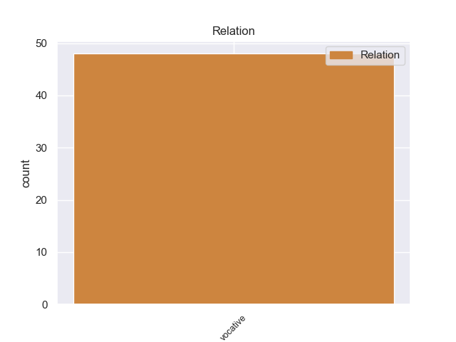
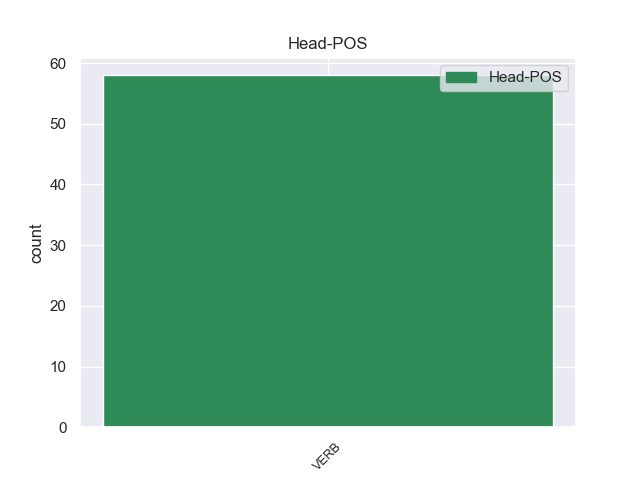
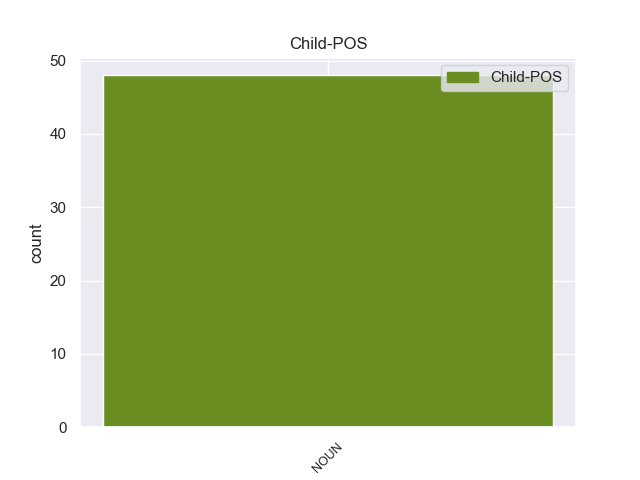

Distribution of features within this leaf



Morphosyntax Rules sorted by frequency.
- When the dependent token is the indirect object(iobj) of the head token, and the head token is VERB and the dependent token is PRON, the Case needs to be Gen.
1 Με _ _ _ _ 0 _ _ _
2 αυτές _ _ _ _ 0 _ _ _
3 τις _ _ _ _ 0 _ _ _
4 κατηγορίες _ _ _ _ 0 _ _ _
5 , _ _ _ _ 0 _ _ _
6 από _ _ _ _ 0 _ _ _
7 τις _ _ _ _ 0 _ _ _
8 οποίες _ _ _ _ 0 _ _ _
9 η _ _ _ _ 0 _ _ _
10 πρώτη _ _ _ _ 0 _ _ _
11 αφορά _ _ _ _ 0 _ _ _
12 λαθρεμπόριο _ _ _ _ 0 _ _ _
13 όπλων _ _ _ _ 0 _ _ _
14 κλπ. _ _ _ _ 0 _ _ _
15 , _ _ _ _ 0 _ _ _
16 και _ _ _ _ 0 _ _ _
17 βαρύνει _ _ _ _ 0 _ _ _
18 τόσο _ _ _ _ 0 _ _ _
19 τον _ _ _ _ 0 _ _ _
20 κ. _ _ _ _ 0 _ _ _
21 Pasqua _ _ _ _ 0 _ _ _
22 όσο _ _ _ _ 0 _ _ _
23 και _ _ _ _ 0 _ _ _
24 τον _ _ _ _ 0 _ _ _
25 κ. _ _ _ _ 0 _ _ _
26 Marchiani _ _ _ _ 0 _ _ _
27 , _ _ _ _ 0 _ _ _
28 ενώ _ _ _ _ 0 _ _ _
29 η _ _ _ _ 0 _ _ _
30 δεύτερη _ _ _ _ 0 _ _ _
31 στρέφεται _ _ _ _ 0 _ _ _
32 μόνον _ _ _ _ 0 _ _ _
33 εναντίον _ _ _ _ 0 _ _ _
34 του _ _ _ _ 0 _ _ _
35 κ. _ _ _ _ 0 _ _ _
36 Pasqua _ _ _ _ 0 _ _ _
37 , _ _ _ _ 0 _ _ _
38 οι _ _ _ _ 0 _ _ _
39 ανακριτές _ _ _ _ 0 _ _ _
40 δικαστές _ _ _ _ 0 _ _ _
41 ζητούν _ _ _ _ 0 _ _ _
42 την _ _ _ _ 0 _ _ _
43 άρση _ _ _ _ 0 _ _ _
44 της _ _ _ _ 0 _ _ _
45 βουλευτικής _ _ _ _ 0 _ _ _
46 ασυλίας _ _ _ _ 0 _ _ _
47 των _ _ _ _ 0 _ _ _
48 εν _ _ _ _ 0 _ _ _
49 λόγω _ _ _ _ 0 _ _ _
50 δύο _ _ _ _ 0 _ _ _
51 κυρίων _ _ _ _ 0 _ _ _
52 , _ _ _ _ 0 _ _ _
53 προκειμένου _ _ _ _ 0 _ _ _
54 να _ _ _ _ 0 _ _ _
55 τους _ _ _ _ 0 _ _ _
56 επιβληθούν _ _ _ _ 0 _ _ _
57 ορισμένα _ _ _ _ 0 _ _ _
58 μέτρα _ _ _ _ 0 _ _ _
59 δικαστικής _ _ _ _ 0 _ _ _
60 επιτήρησης _ _ _ _ 0 _ _ _
61 : _ _ _ _ 0 _ _ _
62 να _ _ _ _ 0 _ _ _
63 τους _ _ _ _ 0 _ _ _
64 απαγορευθεί _ _ _ _ 0 _ _ _
65 η _ _ _ _ 0 _ _ _
66 επαφή _ _ _ _ 0 _ _ _
67 με _ _ _ _ 0 _ _ _
68 διάφορους _ _ _ _ 0 _ _ _
69 μάρτυρες _ _ _ _ 0 _ _ _
70 ή _ _ _ _ 0 _ _ _
71 συγκατηγορουμένους _ _ _ _ 0 _ _ _
72 σ _ _ _ _ 0 _ _ _
73 τις _ _ _ _ 0 _ _ _
74 υποθέσεις _ _ _ _ 0 _ _ _
75 αυτές _ _ _ _ 0 _ _ _
76 και _ _ _ _ 0 _ _ _
77 η _ _ _ _ 0 _ _ _
78 μετάβαση _ _ _ _ 0 _ _ _
79 σε _ _ _ _ 0 _ _ _
80 διάφορες _ _ _ _ 0 _ _ _
81 χώρες _ _ _ _ 0 _ _ _
82 , _ _ _ _ 0 _ _ _
83 καθώς _ _ _ _ 0 _ _ _
84 και _ _ _ _ 0 _ _ _
85 να _ _ _ _ 0 _ _ _
86 τους εγώ PRON PRON Case=Gen|Gender=Masc|Number=Plur|Person=3|PronType=Prs 87 iobj _ _
87 επιβληθεί επιβάλλω VERB VERB Aspect=Perf|Mood=Ind|Number=Sing|Person=3|VerbForm=Fin|Voice=Pass 0 _ _ _
88 ενδεχομένως _ _ _ _ 0 _ _ _
89 η _ _ _ _ 0 _ _ _
90 καταβολή _ _ _ _ 0 _ _ _
91 εγγύησης _ _ _ _ 0 _ _ _
92 . _ _ _ _ 0 _ _ _
non-conforming Examples:
1 Υπάρχουν _ _ _ _ 0 _ _ _
2 επίσης _ _ _ _ 0 _ _ _
3 αυτή _ _ _ _ 0 _ _ _
4 τη _ _ _ _ 0 _ _ _
5 στιγμή _ _ _ _ 0 _ _ _
6 κάποια _ _ _ _ 0 _ _ _
7 στοιχεία _ _ _ _ 0 _ _ _
8 από _ _ _ _ 0 _ _ _
9 μηνύματα _ _ _ _ 0 _ _ _
10 ηλεκτρονικού _ _ _ _ 0 _ _ _
11 ταχυδρομείου _ _ _ _ 0 _ _ _
12 ότι _ _ _ _ 0 _ _ _
13 ο _ _ _ _ 0 _ _ _
14 ιθύνων _ _ _ _ 0 _ _ _
15 νους _ _ _ _ 0 _ _ _
16 που _ _ _ _ 0 _ _ _
17 κατηύθυνε _ _ _ _ 0 _ _ _
18 τον _ _ _ _ 0 _ _ _
19 Richard _ _ _ _ 0 _ _ _
20 Reid _ _ _ _ 0 _ _ _
21 , _ _ _ _ 0 _ _ _
22 ο _ _ _ _ 0 _ _ _
23 οποίος _ _ _ _ 0 _ _ _
24 έκρυβε κρύβω VERB VERB Aspect=Perf|Mood=Ind|Number=Sing|Person=3|Tense=Past|VerbForm=Fin|Voice=Act 0 _ _ _
25 εκρηκτικά εκρηκτικός NOUN NOUN Case=Acc|Gender=Neut|Number=Plur 24 iobj _ _
26 σ _ _ _ _ 0 _ _ _
27 τα _ _ _ _ 0 _ _ _
28 παπούτσια _ _ _ _ 0 _ _ _
29 του _ _ _ _ 0 _ _ _
30 και _ _ _ _ 0 _ _ _
31 προέρχεται _ _ _ _ 0 _ _ _
32 , _ _ _ _ 0 _ _ _
33 δυστυχώς _ _ _ _ 0 _ _ _
34 , _ _ _ _ 0 _ _ _
35 από _ _ _ _ 0 _ _ _
36 τη _ _ _ _ 0 _ _ _
37 χώρα _ _ _ _ 0 _ _ _
38 μου _ _ _ _ 0 _ _ _
39 , _ _ _ _ 0 _ _ _
40 μπορεί _ _ _ _ 0 _ _ _
41 να _ _ _ _ 0 _ _ _
42 έδρασε _ _ _ _ 0 _ _ _
43 με _ _ _ _ 0 _ _ _
44 βάση _ _ _ _ 0 _ _ _
45 το _ _ _ _ 0 _ _ _
46 Πακιστάν _ _ _ _ 0 _ _ _
47 . _ _ _ _ 0 _ _ _
1 Έχοντας _ _ _ _ 0 _ _ _
2 επίγνωση _ _ _ _ 0 _ _ _
3 ότι _ _ _ _ 0 _ _ _
4 υπάρχουν _ _ _ _ 0 _ _ _
5 όρια _ _ _ _ 0 _ _ _
6 σ' _ _ _ _ 0 _ _ _
7 αυτά _ _ _ _ 0 _ _ _
8 που που PRON PRON Case=Acc|Gender=Neut|Number=Plur|Person=3|PronType=Rel 11 iobj _ _
9 μπορούμε _ _ _ _ 0 _ _ _
10 να _ _ _ _ 0 _ _ _
11 κάνουμε κάνω VERB VERB Aspect=Imp|Mood=Ind|Number=Plur|Person=1|Tense=Pres|VerbForm=Fin|Voice=Act 0 _ _ _
12 , _ _ _ _ 0 _ _ _
13 ας _ _ _ _ 0 _ _ _
14 εξετάσουμε _ _ _ _ 0 _ _ _
15 μέχρι _ _ _ _ 0 _ _ _
16 πού _ _ _ _ 0 _ _ _
17 μπορούμε _ _ _ _ 0 _ _ _
18 να _ _ _ _ 0 _ _ _
19 φθάσουμε _ _ _ _ 0 _ _ _
20 και _ _ _ _ 0 _ _ _
21 ποιες _ _ _ _ 0 _ _ _
22 είναι _ _ _ _ 0 _ _ _
23 οι _ _ _ _ 0 _ _ _
24 νέες _ _ _ _ 0 _ _ _
25 ανάγκες _ _ _ _ 0 _ _ _
26 χρηματοδότησης _ _ _ _ 0 _ _ _
27 . _ _ _ _ 0 _ _ _
1 Θα _ _ _ _ 0 _ _ _
2 ήθελα _ _ _ _ 0 _ _ _
3 να _ _ _ _ 0 _ _ _
4 ρωτήσω ρωτώ VERB VERB Aspect=Perf|Mood=Ind|Number=Sing|Person=1|VerbForm=Fin|Voice=Act 0 _ _ _
5 την _ _ _ _ 0 _ _ _
6 Επιτροπή επιτροπή NOUN NOUN Case=Acc|Gender=Fem|Number=Sing 4 iobj _ _
7 εάν _ _ _ _ 0 _ _ _
8 μπορεί _ _ _ _ 0 _ _ _
9 να _ _ _ _ 0 _ _ _
10 εξετάσει _ _ _ _ 0 _ _ _
11 εκ _ _ _ _ 0 _ _ _
12 νέου _ _ _ _ 0 _ _ _
13 την _ _ _ _ 0 _ _ _
14 έκθεση _ _ _ _ 0 _ _ _
15 αυτή _ _ _ _ 0 _ _ _
16 για _ _ _ _ 0 _ _ _
17 να _ _ _ _ 0 _ _ _
18 διαπιστώσει _ _ _ _ 0 _ _ _
19 τι _ _ _ _ 0 _ _ _
20 όροι _ _ _ _ 0 _ _ _
21 θα _ _ _ _ 0 _ _ _
22 πρέπει _ _ _ _ 0 _ _ _
23 να _ _ _ _ 0 _ _ _
24 ισχύουν _ _ _ _ 0 _ _ _
25 σ _ _ _ _ 0 _ _ _
26 το _ _ _ _ 0 _ _ _
27 πλαίσιο _ _ _ _ 0 _ _ _
28 αυτό _ _ _ _ 0 _ _ _
29 για _ _ _ _ 0 _ _ _
30 τα _ _ _ _ 0 _ _ _
31 κράτη _ _ _ _ 0 _ _ _
32 μέλη _ _ _ _ 0 _ _ _
33 . _ _ _ _ 0 _ _ _
1 Το _ _ _ _ 0 _ _ _
2 State _ _ _ _ 0 _ _ _
3 Department _ _ _ _ 0 _ _ _
4 ανακοίνωσε _ _ _ _ 0 _ _ _
5 τη _ _ _ _ 0 _ _ _
6 Κυριακή _ _ _ _ 0 _ _ _
7 ότι _ _ _ _ 0 _ _ _
8 " _ _ _ _ 0 _ _ _
9 ο _ _ _ _ 0 _ _ _
10 Τζων _ _ _ _ 0 _ _ _
11 Κέρι _ _ _ _ 0 _ _ _
12 επικοινώνησε _ _ _ _ 0 _ _ _
13 με _ _ _ _ 0 _ _ _
14 τον _ _ _ _ 0 _ _ _
15 Πρωθυπουργό _ _ _ _ 0 _ _ _
16 του _ _ _ _ 0 _ _ _
17 Ισραήλ _ _ _ _ 0 _ _ _
18 , _ _ _ _ 0 _ _ _
19 Βενιαμίν _ _ _ _ 0 _ _ _
20 Νετανιάχου _ _ _ _ 0 _ _ _
21 , _ _ _ _ 0 _ _ _
22 και _ _ _ _ 0 _ _ _
23 τον _ _ _ _ 0 _ _ _
24 παλαιστίνιο _ _ _ _ 0 _ _ _
25 ηγέτη _ _ _ _ 0 _ _ _
26 , _ _ _ _ 0 _ _ _
27 Μαχμούντ _ _ _ _ 0 _ _ _
28 Αμπάς _ _ _ _ 0 _ _ _
29 , _ _ _ _ 0 _ _ _
30 και _ _ _ _ 0 _ _ _
31 τους εγώ PRON PRON Case=Acc|Gender=Masc|Number=Plur|Person=3|PronType=Prs 32 iobj _ _
32 διαβίβασε διαβιβάζω VERB VERB Aspect=Perf|Mood=Ind|Number=Sing|Person=3|Tense=Past|VerbForm=Fin|Voice=Act 0 _ _ _
33 την _ _ _ _ 0 _ _ _
34 προσωπική _ _ _ _ 0 _ _ _
35 του _ _ _ _ 0 _ _ _
36 δέσμευση _ _ _ _ 0 _ _ _
37 για _ _ _ _ 0 _ _ _
38 προσπάθεια _ _ _ _ 0 _ _ _
39 επίτευξης _ _ _ _ 0 _ _ _
40 ειρήνης _ _ _ _ 0 _ _ _
41 σ _ _ _ _ 0 _ _ _
42 τη _ _ _ _ 0 _ _ _
43 Μέση _ _ _ _ 0 _ _ _
44 Ανατολή _ _ _ _ 0 _ _ _
45 . _ _ _ _ 0 _ _ _
1 Οι _ _ _ _ 0 _ _ _
2 πατατοπαραγωγοί _ _ _ _ 0 _ _ _
3 θα _ _ _ _ 0 _ _ _
4 συνεχίσουν _ _ _ _ 0 _ _ _
5 την _ _ _ _ 0 _ _ _
6 απευθείας _ _ _ _ 0 _ _ _
7 διάθεση _ _ _ _ 0 _ _ _
8 του _ _ _ _ 0 _ _ _
9 προϊόντος _ _ _ _ 0 _ _ _
10 τους _ _ _ _ 0 _ _ _
11 σ _ _ _ _ 0 _ _ _
12 τους _ _ _ _ 0 _ _ _
13 καταναλωτές _ _ _ _ 0 _ _ _
14 , _ _ _ _ 0 _ _ _
15 μιας _ _ _ _ 0 _ _ _
16 και _ _ _ _ 0 _ _ _
17 κάτι _ _ _ _ 0 _ _ _
18 τέτοιο _ _ _ _ 0 _ _ _
19 τους εγώ PRON PRON Case=Acc|Gender=Masc|Number=Plur|Person=3|PronType=Prs 20 iobj _ _
20 εξασφαλίζει εξασφαλίζω VERB VERB Aspect=Imp|Mood=Ind|Number=Sing|Person=3|Tense=Pres|VerbForm=Fin|Voice=Act 0 _ _ _
21 μια _ _ _ _ 0 _ _ _
22 σειρά _ _ _ _ 0 _ _ _
23 από _ _ _ _ 0 _ _ _
24 πλεονεκτήματα _ _ _ _ 0 _ _ _
25 . _ _ _ _ 0 _ _ _